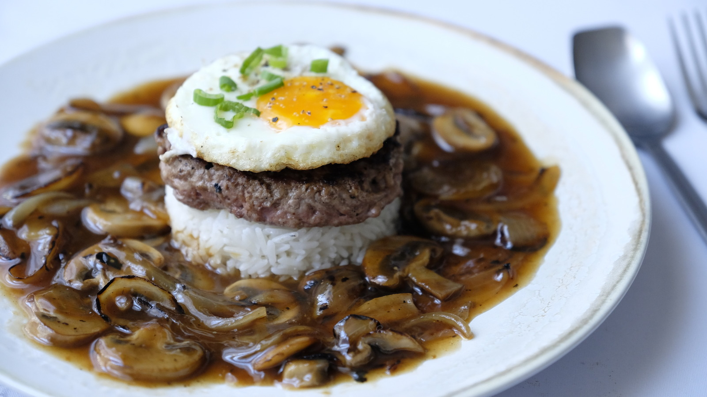

Loco Moco

Description
A loco moco is a simple Hawaiian dish, comprising of a hamburger patty on rice covered in gravy with a sunny side egg on top.
Ingredients
- Hamburger patty
- Rice
- Egg
- Mushrooms
- Onions
- Gravy
Instructions
- Start caramelizing the onions
- Wash and begin cooking the rice
- Add mushrooms to the onions once they are almost done caramelizing
- Once the mushrooms are 80% cooked, add the gravy and let it cook
- Cook the hamburger patty
- Plate!